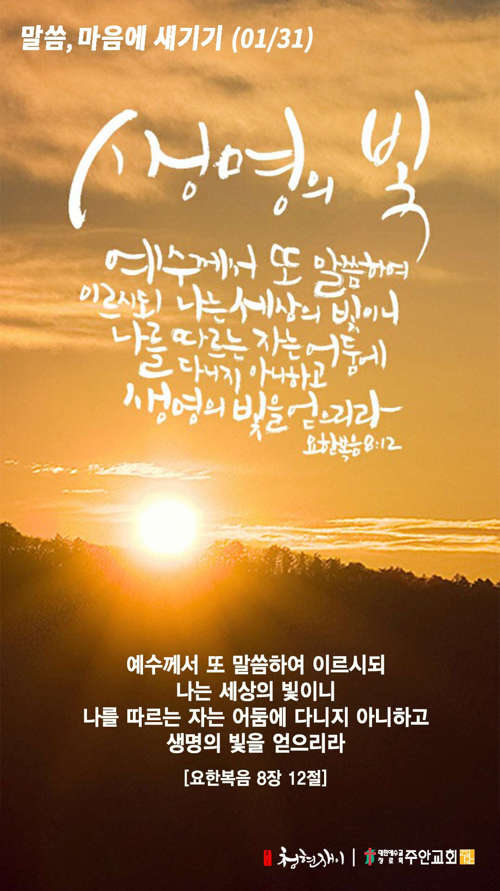

온라인 기도실 안내
2021년 01월31일(일)~02월06일(토)
- 온라인 기도실은 온 회중이 함께 주님 앞으로 나아가는 자리입니다
- 30분 정도 여유를 가지고 하시기 바랍니다
- 말씀과 묵상, 찬양과 기도로 나아갑니다
- 배경 음악이 나올 수 있습니다 볼륨을 조절해주세요
준비가 되셨으면 아래의 버튼을 눌러주세요
할렐루야
내 영혼아 여호와를 찬양하라
시146:1
- 가사를 묵상하며 읽습니다
나를 지으신 이가 하나님
나를 부르신 이가 하나님
나를 보내신 이도 하나님
나의 나 된 것은 다 하나님 은혜라
나의 달려갈 길 다가도록
나의 마지막 호흡 다하도록
나로 그 십자가 품게 하시니
나의 나 된 것은 다 하나님 은혜라
할렐루야
내 영혼아 여호와를 찬양하라
시 146:1
- 가사를 묵상하며 읽습니다
한량없는 은혜 갚을 길 없는 은혜
내 삶을 에워싸는 하나님의 은혜
나 주저함 없이 그 땅을 밟음도
나를 붙드시는 하나님의 은혜
나를 지으신 이가 하나님
나를 부르신 이가 하나님
나를 보내신 이도 하나님
나의 나 된 것은 다 하나님 은혜라
할렐루야
내 영혼아 여호와를 찬양하라
시146:1
하나님 은혜 by 김수진
위의 찬양이 끝나면 말씀읽기를 눌러주시면 됩니다
주의 말씀은 내 발에 등이요
내 길에 빛이니이다 시119:105
오늘의 말씀입니다
음악 소리가 크면 조절하시기 바랍니다
"하나님의 은혜" 편곡 및 연주 by 이지선

마음의 묵상
요 8:12
“예수께서 또 말씀하여 이르시되 나는 세상의 빛이니 나를 따르는 자는 어둠에 다니지 아니하고 생명의 빛을 얻으리라”
1. 예수님은 스스로를 어떻게 지칭하고 계신가요?
2. 예수님을 따르면 어떻게 된다고 말씀하나요?
3. 어둠에서 빛으로 나아가는 삶을 묵상해보세요
생명의 빛 안에 거하게 하소서
회개, 삶의 방향을 바꾸는 결정
회개는 하나님께 나아가는 통로입니다
“자기의 죄를 숨기는 자는 형통하지 못하나 죄를 자복하고 버리는 자는 불쌍히 여김을 받으리라”
- 잠언 28장 13절 -
3분 정도 회개하며 주님 앞에 나아갑니다
사슴이 시냇물을 찾기에 갈급함 같이
(시42:1)
- 다음의 말씀을 소리 내어 읽습니다
[시편 119장 174-176절]
174 여호와여 내가 주의 구원을 사모하였사오며 주의 율법을 즐거워하나이다
175 내 영혼을 살게 하소서 그리하시면 주를 찬송하리이다 주의 규례들이 나를 돕게 하소서
176 잃은 양 같이 내가 방황하오니 주의 종을 찾으소서 내가 주의 계명들을 잊지 아니함이니이다
하나님 나라
1. 하나님의 나라가 속히 이 땅에 임하게 하소서
하나님 아버지, 기후 변화와 환경오염, 그리고 바이러스로 인해 고통 가운데 있는 이 땅의 피조물들을 긍휼히 여겨주소서.
하나님께서 맡겨주신 자연 환경을 제대로 돌보지 못한 우리의 죄를 용서하여 주시고, 만물의 화해자 되신 주님께서 자연
만물과 이 땅의 피조물들을 치유의 손길로 어루만져주소서.
간절한 마음으로 3분 정도 기도합시다
남과 북
2. 남북한이 속히 복음으로 통일되게 하소서
하나님 아버지, 지금도 북한에서 주님을 믿는다는 이유로 차별받고, 생명의 위협까지 받는 믿음의 형제 자매들을 지켜주소서.
그들의 억울함을 들어주시고, 끝까지 주님을 배반하지 않게 하시고, 그들을 박해하는 악한 세력으로부터 보호하여 주소서.
그리하여 그들을 통하여 북한에도 계속해서 복음의 놀라운 역사가 일어나게 하소서.
간절한 마음으로 3분 정도 기도합시다
대한민국
3. 우리나라가 하나님을 경외하는 나라가 되게 하소서
하나님 아버지, 올해 안에 우리나라 모든 국민에게 바이러스 백신 접종이 완료되게 하소서.
그리하여 더 이상 바이러스로 인하여 고통받는 이들이 사라지게 하시고,
그 모든 계획을 이끌어가는 지도자들에게 지혜와 능력을 더하여 주소서.
간절한 마음으로 3분 정도 기도합시다
한국교회
4. 한국교회가 성령으로 새롭게 부흥되게 하소서
하나님 아버지, 한국 교회 안에 더 이상 말과 혀로만 예수님을 사랑한다 하는 이들이 아닌,
행함과 진실함으로 예수님을 사랑하는 이들이 일어나게 하소서.
한 알의 밀알이 되어 자신의 삶을 주님께 드리는 이들을 통하여 한국교회 안에 하나님의 영광이 충만케 하소서.
간절한 마음으로 3분 정도 기도합시다
주안교회
5. 주안교회가 다음 세대를 세우는 선교적 교회가 되게 하소서
하나님 아버지, 주안교회 모든 성도들이 전능하신 하나님만 바라보고,
오직 믿음으로 주님께 나아가 부르짖는 성도들이 되게 하소서.
그리고 우리에게 있는 가장 작은 것이라 할지라도 믿음으로 그것을 주님께 내어 놓아,
주님께서 베풀어 주시는 놀라운 기적을 맛보는 은혜의 인생이 되게 하소서.
간절한 마음으로 3분 정도 기도합시다
감사의 기도
- 오늘 기도를 인도하신 주님께 감사를 올려드립니다
- 아래의 구절을 읽고 주님께 감사의 마음을 올려드립시다
()
“주는 나의 하나님이시라 내가 주께 감사하리이다 주는 나의 하나님이시라 내가 주를 높이리이다”
- 시편 118장 28절 -
고요한 가운데 잠시 침묵하시기 바랍니다
파송, 세상을 향하여
- 오늘의 온라인 기도를 마쳤습니다
기도를 들으신 주님께서 평안히 가라 하십니다
주님께서 우리와 함께 하시니 두려울 것이 없습니다
새벽을 깨우며
- 새벽기도회 안내입니다